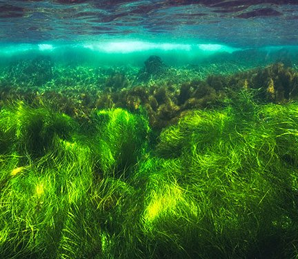

Endangered marine ecosystems
Until recently, humankind seemed to view the ocean as a source of infinite resources.
Its vast size and depth and unexplored frontiers made the ocean appear invulnerable to overexploitation.
The truth is that the populations of many species are decreasing at an unsustainable rate,
and the number of species listed as Endangered from marine life Families such as whales, dolphins,
manatees and dugongs, salmon, seabirds, sea turtles, and sharks to name a few, are on the rise.